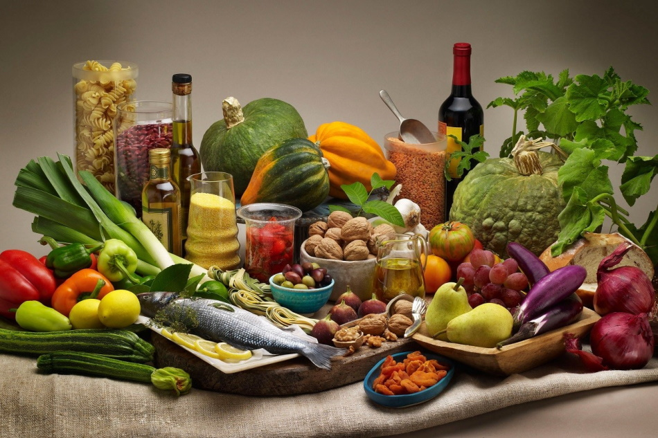
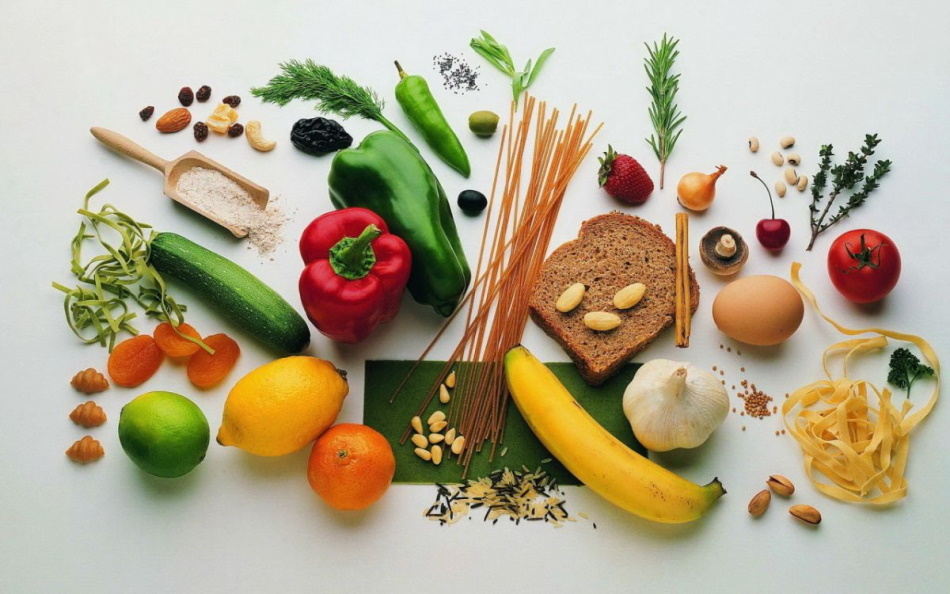
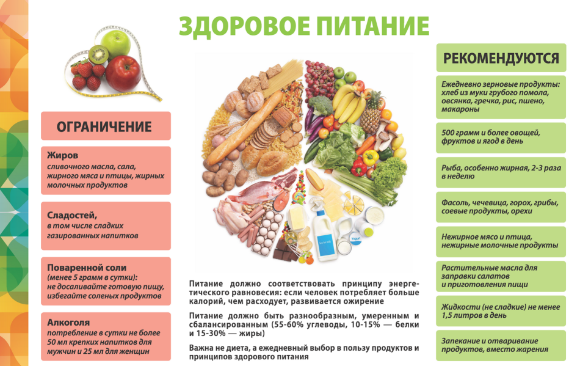

Здоровое питание
Правильное питание – залог хорошего самочувствия, здорового внешнего вида и крепкого иммунитета. Сбалансированное здоровое питание позволяет получать все необходимые минералы и микроэлементы. Если же стоит задача снизить вес, соблюдение принципов правильного питания позволит сделать это без дискомфорта и голода.

ПРИНЦИПЫ ЗДОРОВОГО ПИТАНИЯ
Что дают регулярные динамические нагрузки?
Принципов здорового питания несколько:
• Питание должно быть разнообразным и богатым продуктами. Недельный рацион обязательно должен включать мясо, рыбу, фрукты, овощи и крупы.
• 50-60% дневной нормы энергии нужно получать за счет углеводов – они необходимы для работы мозга. Однако лучше отдавать предпочтение медленным углеводам (цельнозерновой хлеб, греча, бурый рис, макароны из твердых сортов пшеницы и т.д.). С ними вы будете дольше ощущать сытость.
• Избегайте усилителей вкуса, консервантов, химии. Если невозможно отказаться от них полностью – постарайтесь минимизировать содержание этих продуктов в рационе.
• Желательно, чтобы питание было дробным – 4-6 небольших порций в течение дня (1 порция должна быть примерно равна вместимости 1 стакана). Это намного лучше для организма, чем 1-3 больших порции, т.к. длинные перерывы между приемами пищи – стресс для организма.
• Откажитесь от жирных майонезных соусов – они очень калорийны, а кроме того, заправки промышленного приготовления сложно назвать полезными. Майонез можно заменить на нежирную сметану или натуральный йогурт.
• Не обязательно совсем отказываться от алкоголя, но его прием нужно свести к минимуму. Самый безобидный алкогольный напиток – хорошее сухое или полусухое вино. Бокал такого вина можно позволить себе раз в 1-2 недели.
• Большая часть пищи должна быть сварена, приготовлена на пару или запечена, но не обжарена: при обжаривании выделяются канцерогенные вещества, кроме того, такая пища очень жирная.
• Не покупайте готовую еду и откажитесь от полуфабрикатов – готовьте самостоятельно, используя качественные продукты, чтобы точно знать, что на вашем столе. Отдавайте предпочтение охлажденным продуктам, а не замороженным, особенно, если речь идет о мясе или рыбе.
• Последний прием пищи должен быть не позднее, чем за 2 часа до сна. Полный желудок мешает спокойному сну, да и пища во сне переваривается куда хуже.

ПОДДЕРЖАНИЕ ВОДНОГО БАЛАНСА
Вода – это основной элемент правильного питания. Без воды организм не способен функционировать. Поэтому очень важно пить столько, сколько требует организм. Для поддержания оптимального уровня водного баланса нужно выпивать как минимум два литра в сутки. Полезнее всего пить чистую воду, а не чай кофе или сок. Делать это лучше отдельно от приема пищи, чтобы не разбавлять желудочный сок.
Если вы почувствовали голод, попробуйте сначала выпить воды. Иногда мозг ошибочно принимает сигналы о жажде за сигналы голода. Если чувство голода при этом прошло – значит, прием пищи можно отложить.
